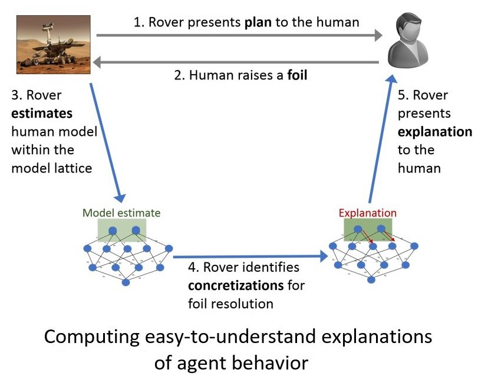
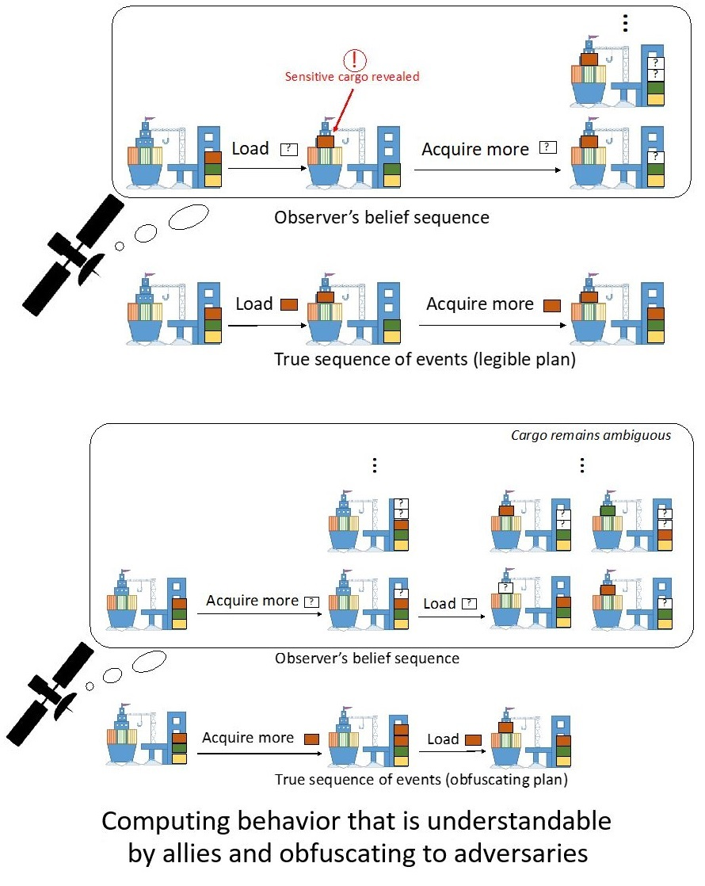

Research
Synthesis and Analysis of Abstractions for Autonomy
It would be impractical to reason about multi-step tasks such as setting a table for dinner at the lowest level of modeling (e.g.,individual joint movements). In order to build autonomous systems that help in complex, multi-step tasks (where we may actually need help), we draw upon the best example of intelligent systems we know: humans. As humans we rarely think about where to place our knees and elbows. Instead, we reason about achieving abstracted regions of configurations (e.g. reach the 5fth floor).
Automatically coming up with the right abstraction to solve a problem efficiently is a notoriously challenging problem. We are developing new methods for utilizing abstractions in sequential decision making (SDM), for evaluating the effect of abstractions on models for SDM, as well as to search for abstractions that would aid in solving a given SDM problem.
Integrated Task and Motion Planning
In order to solve tasks such as doing the laundry, a robot needs to compute high-level strategy (should I use the basket?) as well as the joint movements that it should execute. Unfortunately, approaches for making high-level decisions rely on "task planning" abstractions that are lossy and can produce strategies that have no feasible motion plans.
We are developing new methods for dynamically refining the task-planning abstraction to produce combined task and motion plans that are executable.
Generalized Planning
"Be wise, generalize!"
Planning is well known to be a hard problem. We are developing methods for acquiring useful knowledge while computing plans for small problem instances. This knowledge is then used to aid planning in larger, more difficult problems.
Often, our approaches can extract algorithmic, generalized plans that solve efficiently large classes of similar problems as well as problems with uncertainty in the quantities of objects that the agent needs to work with. The generalized plans we compute are easier to understand and are generated with proofs of correctness.
Autonomous Agents That Are Easy to Understand and Safe to Work With
AI systems have the potential to improve our society in many walks of life. However, today's AI systems require highly trained experts for their customization, configuration, and repair. This not only makes it difficult to realize the potential benefits of AI in society, but also creates large uncertainties in the future of employment for millions in the workforce. On the other hand, perfectly transparent AI systems would present grave risks wherever information needs to be protected, as they may inadvertently reveal sensitive information (thus compromising user privacy or protected data) and may be susceptible to disruptive adversaries.
To address these issues, we are developing new ways for AI systems to explain their behavior in a manner aligned with the proficiency of the users. We are also developing methods for computing agent behavior that reduces the amount of information yielded to adversaries while maximizing its understandability by allies. These methods would facilitate spontaneous, productive teamwork between AI systems and people who may be experts in fields other than AI.


Planning and Reasoning Under Uncertainty
A real robot never has perfect sensors or actuators. Instead, an intelligent robot needs to be able to solve the tasks assigned to it while handling uncertainty about the environment as well as about the effects of its own actions. This is a challenging computational problem, but also one that humans solve on a routine basis (we don't have perfect sensors or actuators either!).
We are developing new methods for efficiently expressing and solving problems where the agent has limited, incomplete information about the quantities and identities of the objects that it may encounter.
Roblocks: An Educational System for AI Planning and Reasoning
The objective of this project is to introduce AI planning concepts using mobile manipulator robots. It uses a visual programming interface to make these concepts easier to grasp. Users can get the robot to accomplish desired tasks by dynamically populating puzzle shaped blocks encoding the robot's possible actions. This allows users to carry out navigation, planning and manipulation by connecting blocks instead of writing code. AI planning techniques are used to prune down the vast number of actions possible to suggest only the truly feasible and relevant actions.